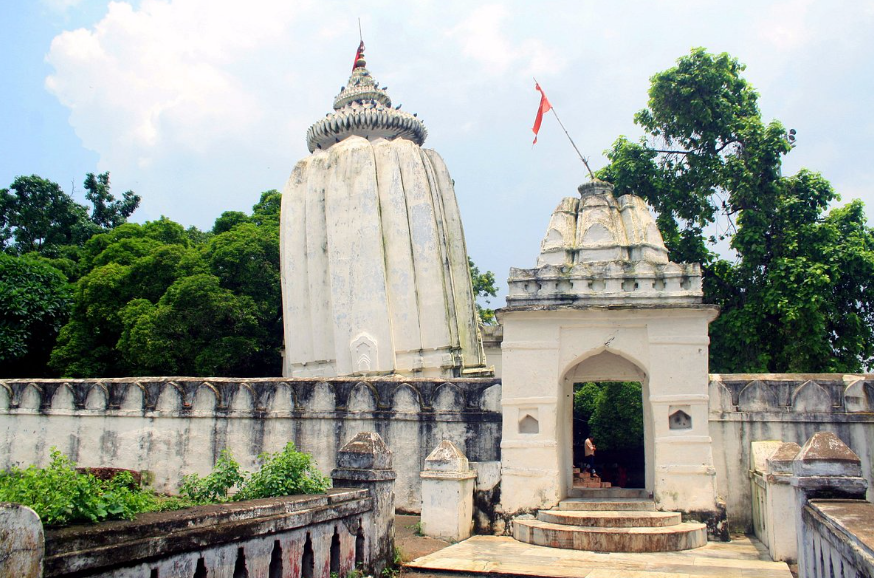

“Why does it lean?” I asked the tea stall owner as I sipped from a tiny cup in the early morning chill. He smiled, shook his head, and replied, “Because Shiva wanted it that way.”
That was the beginning of my ride to Huma Temple—the only leaning temple in India. No engineers. No blueprints. Just centuries-old bricks bowing at impossible angles. No one knows exactly why.
As I left Sambalpur, the road unfolded like a ribbon of questions. 23 kilometers of twisty hills and golden fields led me toward the river. Birds flew parallel to my bike. Fishermen were setting up for their morning catch. The journey felt... intentional. Like I was being invited.
“Some places you visit. Others—you’re summoned.”
When I reached the site, the air was thick with incense and mystery. The temple really does lean—not just the main sanctum, but even the walls around it. No earthquakes. No modern disturbance. And yet, it defies gravity.
Locals say it was built in the 17th century by King Baliar Singh, and that the lean is divine—not architectural. There’s a submerged Shiva linga visible only during certain tides. And the fish in the river? Never caught. Sacred. Untouched.
More Than Just A Monument
I stepped inside. The floor was uneven, and the lean made everything feel surreal—like walking in a tilted dream. Devotees chanted softly. Bells rang. No one questioned the slant. It was simply accepted. Revered.
Outside, I sat under a banyan tree. An old woman selling marigold garlands asked, “Do you want to leave something behind?” I gave her a coin, but in truth—I left behind my doubts.
Ride Log
- Start Point: Sambalpur (FunZone Base)
- Distance: ~23 km
- Time: 40 minutes one-way (early morning is best)
- Pro Tip: Don’t just take pictures. Sit. Observe. Breathe it in.